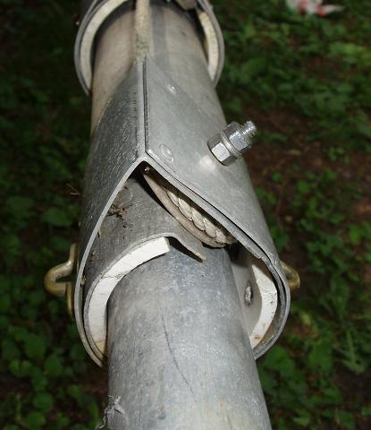
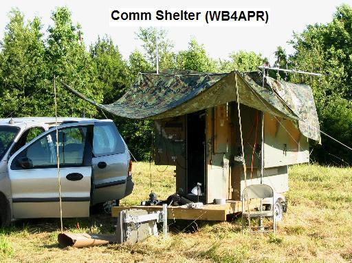
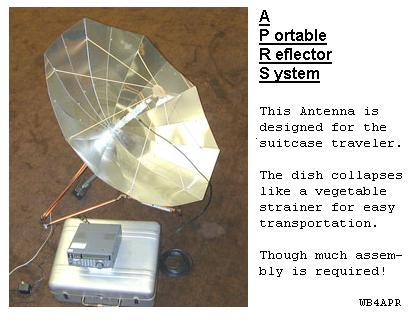

BACKGROUND: People have been asking me for the last 20 years to publish the plans for my very lightweight 55 foot portable APRS push up antenna mast. This mast is made from 3 pieces of abandoned thin-wall irrigation piping that can be obtained for a song from any nursery or farmer. It only weighs 35 pounds and can be held up with one hand. Usually I insert a static 10 foot fiberglass marine mast and 6 foot VHF whip on the top for a total height of about 70 feet. Not bad for something you can hold in your hand!
WARNING: This is not a how-to-construction site. Operating this mast has risk and the author assumes no liability for all the foolish things that an inattentive operator can do to damage both himself and surrounding property. Use at your own risk!
GETTING THE PIPE: Since irrigation pipe is very lightweight it is also pretty easy to bend when dragged across hill-and-dale by some yahoo on a tractor. Since the expensive specialized fittings on each end weigh almost as much as the pipe, it turns out that a lot of the damage is done right at the end fitting. Visit any farm or park that uses this stuff and you will find a pile of broken and snapped pipes that you can get for asking. Cut off the bent ends and if you are lucky, you can easily find some 18' sections.
DESCRIPTION: I used to carry it around on the roof of my Van, but now have finally added it to the comm shelter I now use for APRS field events. The center section is even spliced after it bent in half 20 years ago during a microburst at a Field Day thunderstorm, where I had left the site (with it fully extended) for several hours. Now finally, this weekend (May 06) I was doing the first manitenance on it in 20 years and decided to take some photos. I decided to just put the photos here on the web instead of writing a magazine article, because no licensed engineer would probably ever say this was safe for just any fool to build. I use it self supporting with the 8 foot pivot point on the back of the trailer, but keep a close eye on the wind now!
CONSTRUCTION: The following photos show the additional detail in the key areas. The pipe is only 1/16th inch thick and comes in 2, 3 and 4" diameters. Thus, to make them telescope without too much play, you need to make some sleves of plastic PVC pipe at the inside top and outside bottom of each section. These sleeves also control the overlap so that when fully extended, there is still 2 feet of overlap between sections. I use Pop-Rivets to secure the various pieces being ever mindful to recess the rivets in the PVC to prevent binding. Since standard PVC sizes do not fit inside or outside, you have to split them and compress or expand them as needed.
WEIGHT: The heaviest parts of the mast assembly are the 6" or so long sections of the internal PVC spacers noted above. The total weight is about 35 pounds as supported here by my daughter.
PULLEYS: There are three pulleys, one at the top of each of the lower two sections and one at the bottom of the middle section. I used approximately 2.5" nylon ones used for clothes lines? This weekend replacing the top pulley was required due to 20 years of UV exposure and cracking and I found the LAST one in an old bin at our Home Depot. Care must be taken to have aluminum or PVC "guides" close to the pulleys to keep the rope in place on the pulleys. A jammed pulley means you have to bring the whole thing down sideways at full length! The rope threads from the bottom of the inner section to the top of the middle section, then down to its bottom pulley and then back up to the top pulley on the outer section and then down to the ground.
Doing it this way raises all three sections in series and gives a mechanical advantage of 3 to 1. (16 LB pull to raise 48 Lbs). Another way to do it (not recommended) is to not use bottom pulleys and let each section raise the next in parallel. This takes 3 times the force and requires rope and pulleys that are 3 times stronger. Here are some detail photos of the upper pulleys (with my 10" gage train track in the background (but that's another story)):
.

Notice how the top pulleys are mounted at a tangent angle to keep them from protruding very far from the pipe. This is not necessary, but I thought it was more pleasing not to have them sticking out at right angles. Also you can see the PVC spacer cut so that there is a passage for both runs of the rope. Also see the three chain links I strapped to the mast to serve as the lower guy points. (I only use them when standing this straight up in a field without my trailier). The next photo shows the topmost pulley on the 3" pipe.

Notice also the three small brass attachment points for the top guys. You should use 4. The reason my mast came down in that microburst 20 years ago was because of 3 point guys with nylon lines! With 120 degrees between guys that can stretch, it is easy for the mast to stretch two of them and fall. But again, as long as there is no wind and I remain at the site, and have the mast pivoted on the trailer, I don't use guys. I can lower it in seconds, (faster with rope burns).
LOWERING IT: Raising it is trivial, just pull on the rope. The lighter top section will rise first, and with the rope threaded through all three pulleys, there is a 3-to-one mechanical advantage to raising the mast. The problem is lowering it. . . Due to the very light weight constrution of the mast system, if there is not a sufficient antenna weight on the top, the friction of the rope and pulleys and slight dents and dings over the years often prevent it from coming down. I usually grab the lower part of the mast with one hand while holding the rope losely with the other and raise the mast 6" to a foot off the ground and drop it to overcome stiction... This must be done with care if one handed, because if it starts to go you can get a rope burn trying to stop it. Best to have one person tending the rope while the other jiggles a stuck mast. And best that the rope tender is the owner, because if he lets it free-fall telescope down full length on itself he will probably have to rebuild it!
PADDING: On this 20 year refurbishment, I added a 6" foam plug at the bottom of the two lower mast sections to serve as a cushon to mitigate damage if the thing does get away from me. Notice that the lower section is about a foot shorther than the middle section. This is so you can take the bottom plug out of the lower section and slide the middle section with its lower-pulley-assembly out the bottom about 6" for maintenance as shown below. Notice how the axle is a 1/4" stainless steel bolt double-nutted to a center divider plate. Unfortunately, neither of these photos shows the PVC sleeve spacer very well with two slots cut out of it for the ropes). I should have mounted it closer to the pulley to better guide the ropes too. It is just very slightly visibile in the left photo and it is clearly visible (though not obvious) as the white section above the pulley in the background. Also visible in the right photo is my electric car, but that is another story.
 .
.
BASE AND PIVOT: I used to just strap this to the roof of my car with red flags one either end for the trip to Field Day. Planned to build a pivot mount for it, but never did until I got the comm trailer. With the trailer, the mast just lays on the top, centered to minimize the overhang out front and back. There is no pivot other than the edge of the shelter. This way, it can be at any height depending on ground level at the back of the trailer. Also I can gain mechanical advantage when raising it or lowering it by sliding the base out farther from the trailer and then only lifting it in place as it becomes more vertical.
.
The following two photos show the front and back overhang as well as a number of other unfinished projects outside my shop. On the roof is the 15' fiberglass VHF whip antenna I use at the top to get to the full height of 70 feet. It has a nice kink in the middle (now spliced) from the full- sized fall 20 years ago. And the big ding in the corner of my electric car is from stupidly making a slight left turn as I was pullling out the trailer last year and it caught on the electric car's bumper and removed it along with the corner of the car.
Click for top front roof detail
UP PHOTOS: It is hard to get a good clean view of the fully deployed mast in my small yard, but a few attempts follow. Again, these are without the added 15' fiber glass whip on the top and only a big coffee mug over the top to give perspective.
CONCLUSION: This 35 pound mast has sure been an advantage over the years as it always allows me to get my antenna way up there. And it sure draws a crowd. I'm just sorry it took me over 20 years to get around to documenting it. Actually, the one detail not shown in the photos is the bottom of the inner 2" pipe section. Since it is embedded in the middle section and the internal PVC sleeves prevent it from coming out the top and the bottom pulley blocks the bottom, I really don't remember what it looks like. But it is simply a rope tied at the bottom with a PVC sleeve. But be sure to use UV resistent dacron rope or you will have to do what I did 18 years ago and splice in a replacement. Since I couldn't get to the bottom of the inner section without drilling out all my pop-rivet construction, I just kept the lower 6 feet of rope (which has never seen the sun or any UV) and made my splice of the dacron rope at that point. But the splice has always been problematic. This weekend I finally re-did the splice as a "long-splice" to spread out the discontinuity and now it works well again.
Another way: And here is another way to do it, a kit for $1250 or something like that. But in contrast, mine only cost about $10 for the pulleys and some time with a hacksaw... and smooth talking to the local gardner...
OTHER ANTENNAS: Besides the photo below of a typical APRS Field Day set up and using the trailer to observe the 2004 transit of Venus (without the mast), you can see some of my other antenna projects, this one for AO-40 was also a fun hardware project:
 
See the portable Dish design page.
{kind=link}